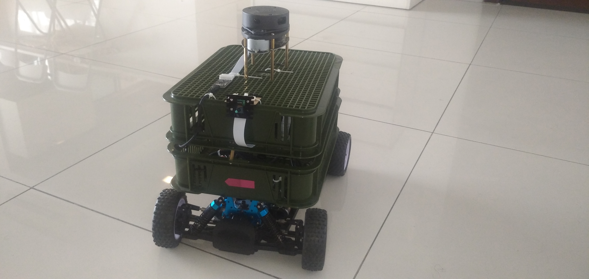

A modified RC car UGV

This ugv runs on top of a 35km/h RC Car.The drive system is an Ackerman type of drive, whereby the front two wheels are used to steer ( control turning angles) whilst the back wheels provide for throttle. It uses a raspberry pi for computing and runs ROS Melodic and OpenCV libraries. It is equiped with camera for vision and 2D lidar for obstacle detection and to aid navigtion. Two modes are supported, that is a manually controlled navigation mode and an autonomous mode.
To support autonomous mode the robot uses slam. This is a simultaneous navigation localization and mapping technique. It is used to build a map of an area, by manually driving in an unknown area, whilst taking sensor readings required for map building. Aftewards the robot is localized in previously built map, and uses sensor fusion to obtain its most probable orientation and position within the map as it moves. With this approach the robot can autonomously drive to any location within the map.It is also able to avoid obstacles and travels to its global goal by calculating the shortest distance to the goal. To implament above features hector slam package is used and tuned for this robot model.